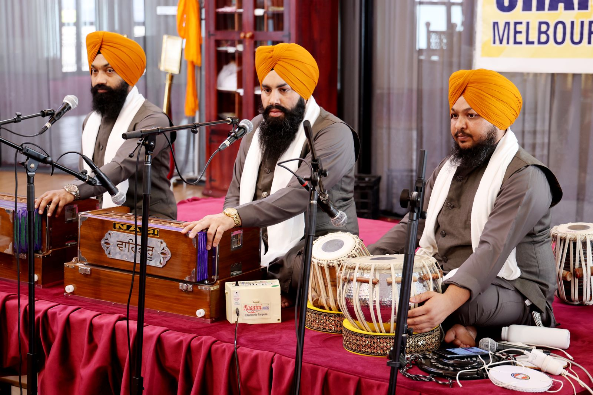

About
Trained in one line, singing in the open
Nikhil Krishnan began learning at nine, in a Mylapore house where the December Season was the calendar everything else bent around. At eleven he was accepted as a student of Vidwan S. Ranganathan, and he stayed with the one guru for fourteen years — sarali varisai to pallavi, in the Ariyakudi bani: the concert shaped as a whole, the main piece given its full weight, nothing padded.
His arangetram came in 2011. Since then: main-slot kutcheris through seventeen December Seasons, temple concerts across Tamil Nadu, baithaks in living rooms from Alwarpet to Ann Arbor, and a sideline he did not plan — studio sessions, where producers discovered that a singer who counts in cycles is useful far beyond classical work (Case 2, on the Concerts page, is the short version).
He has taught since 2016, deliberately small: twenty-two students, three levels, one hand kept on the tala from the first lesson. The teaching method, the rider and the booking terms are all below — the things a portfolio usually hides are the things a sabha secretary, a host or a parent actually needs.

Press pack (EPK)
Short bio — 50 words, for programmes:
Nikhil Krishnan is a Carnatic vocalist from Chennai, trained for fourteen years under Vidwan S. Ranganathan in the Ariyakudi bani. A December Season regular since 2011, he is known for ragam–tanam–pallavi in uncommon talas, and teaches a small studio of twenty-two students.
The full pack — long bio, the sixty-kriti repertoire list, the rider below, references from two sabhas, and concert reference photographs — is sent on request to sabhas, festivals and promoters. Ask for the press pack.
Teaching
The studio: three levels, one hand on the tala
Lessons are sixty minutes, in the Mylapore studio or online, Tuesday to Saturday. Fees are on the home page: ₹1,800 a lesson, or ₹6,000 a month for four lessons with practice reviews.
Foundation
Sarali and janta varisai, alankarams in three speeds, and geethams from about month three. The tala is kept by hand from the very first lesson — the hand learns the cycle before the voice is asked to do anything difficult inside it.
Intermediate
Varnams in two kalams (speeds), the first kritis, and the beginnings of alapana. Students sit in on December Season concerts with a listening brief — what to follow, where the pallavi turned — and report back.
Advanced
Manodharma in full: alapana, neraval, kalpana swaram, and building a ragam–tanam–pallavi of your own. Concert preparation is part of the level, including how to rehearse with accompanists and how to agree a programme with a sabha.
Practice, honestly. Forty-five minutes a day, logged. Twenty honest minutes count for more than a claimed hour — the log is reviewed every fourth lesson, kindly and without exception. Adult students with jobs and children get a plan that fits the week they actually have; the cohort story on the Concerts page shows what that looks like over fourteen months.
What a student needs
- A shruti source. An electronic shruti box (₹3,500–₹6,500) is enough to start. A real tambura (₹18,000–₹45,000 from Thanjavur makers) can come later, if you fall for the real thing.
- A notebook for kriti texts and the corrections from each lesson.
- A recording of every lesson — a phone is fine.
- Not a drum. Vocalists don’t buy mridangams. Students who want percussion too are sent to a colleague — one guru per instrument.
On the day
Rider & booking terms
Short, practical, and the same for a temple committee and a festival: what the artists need in the room, and the terms a date is held on.
Baithak setup
- Floor seating on carpet; artists on the floor or a low platform, in one line.
- Two microphones (voice, mridangam) into a small PA — or fully acoustic in rooms of under forty guests.
- Tambura player seated stage-left, or the shruti box beside the vocalist.
- Drinking water at room temperature. No incense near the artists — it closes the throat.
Sabha & stage setup
- Four channels: voice, violin, and two on the mridangam (one acceptable, two preferred).
- Monitor mix with the voice forward; the mridangam artist hears the violin.
- Soundcheck forty-five minutes before doors; stage plot sent with the contract.
- A green room with water and a mirror is all the hospitality asked.
Booking terms
- Holding a date: 40% advance; December Season dates are held fourteen days on enquiry, then released.
- Balance on the day of the concert, before the performance.
- Cancellation: full advance back at 60+ days; half at 30–60 days; inside 30 days the advance is spent — the accompanists have already been paid from it.
- Accompanists are engaged by the sabha or by Nikhil — stated in the contract, never assumed.
- Recording: sabha recordings for archive are welcome; broadcast or commercial release is a separate written agreement.